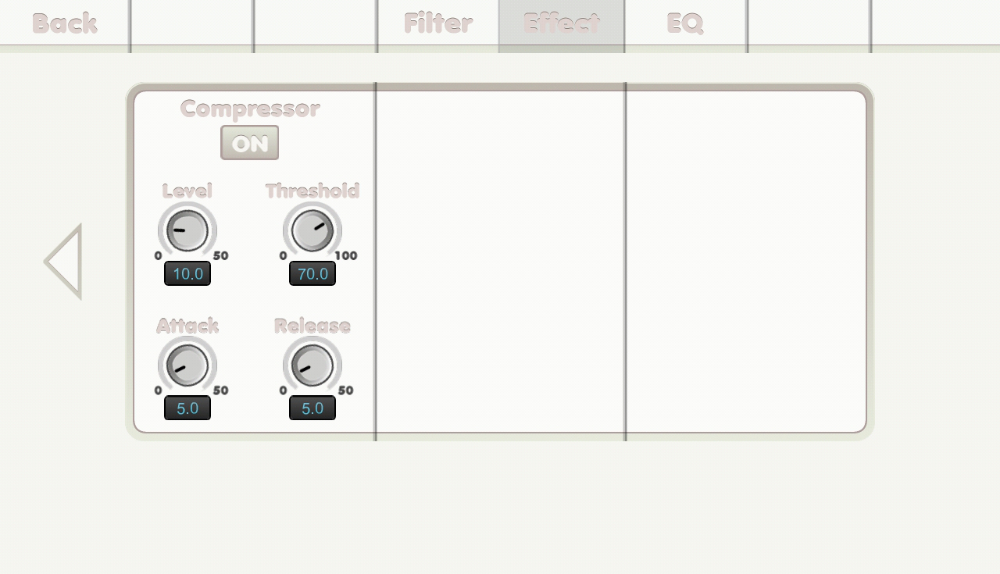

{% include JB/setup %}
Effect screen(3)

- Back tab: back to previous main screen.
- Filter tab: read you to filter screen.
- EQ tab: read you to eq screen.
- ON button: to turn the effect on.
- Level knob: level.
- Threshold knob: threshold.
- Attack knob: attack time in millisecond.
- Release knob: release time in millisecond.
- Swipe horizontally to go to another page.